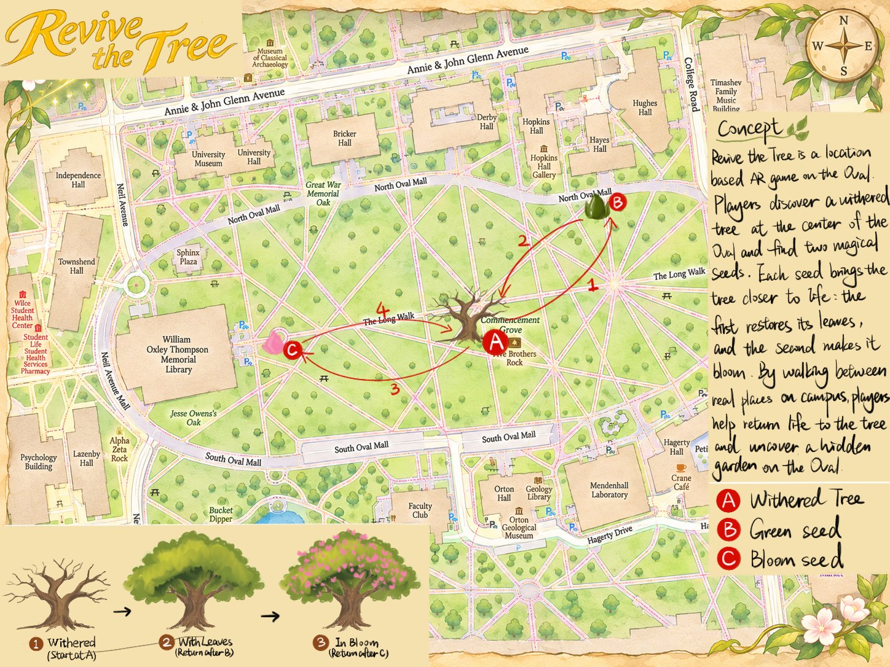

FOUND ON THE OVAL · A WALKING GAMERevive the Tree
Freya & Wenxi · Project 2
Bring life back to one tree, one journey at a time.
SIMULATION — GPS is not being tested A · Tree→B · Green→C · Bloom
A: Five Brothers Trees
B: Tree in front of Hayes
C: Statue
Route: A → B → A → C → A · View map ↓
Explore the Oval

Follow the four journeys: A → B → A → C → A.
Tap the map to open the full-size image and zoom in.Record a spot
Wait for good GPS accuracy, then save each location.
Future chapters: discover water, pollinators and other trees around the Oval.